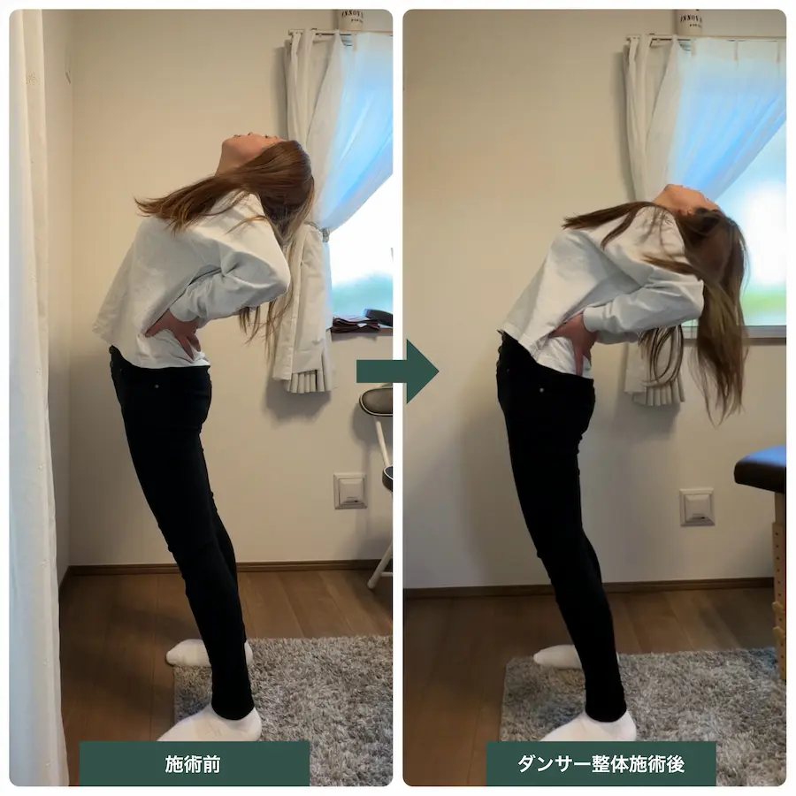
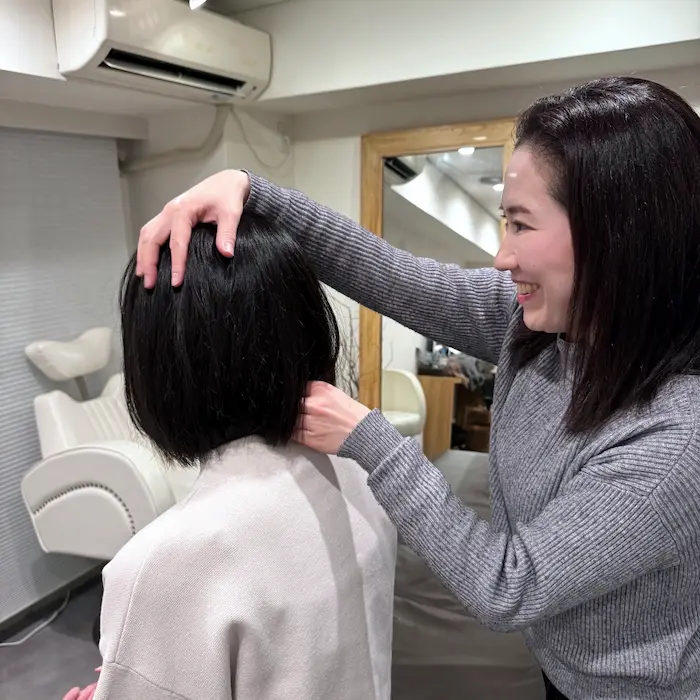
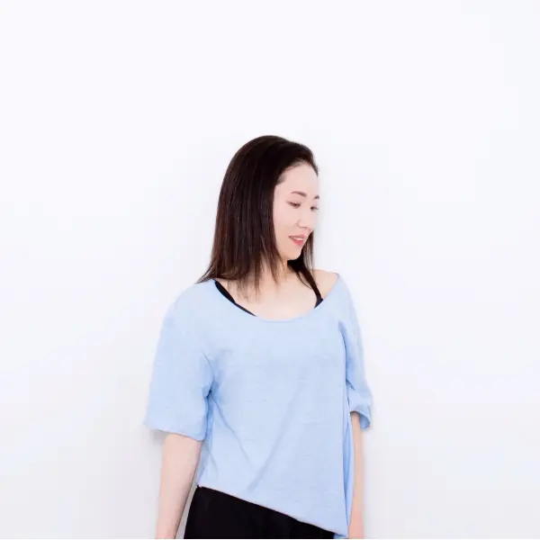
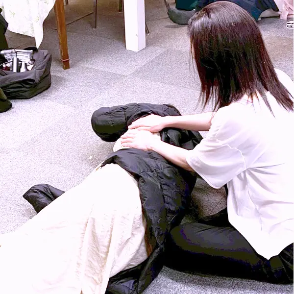

股関節や胸椎の動きに変化が見られ、伸展動作がしやすくなった印象です。
背中全体が伸びやすくなり、動きにも変化が見られました。

いくつからでも、自分史上最高の身体へ
ダンスのパフォーマンスアップから
日常生活の身体づくりまで。
姿勢・動作・感覚・発達など
多角的な視点を取り入れ、
一人ひとりに合わせた身体づくりを
サポートします。
頑張っているのに思うように体が変わらない。
動きづらさや不調の原因が分からない。
そんな悩みを、年齢や才能のせいにしていませんか。
大人の方にもまだまだ伸び代があります。
Re:moveでは、ダンスのパフォーマンスアップを目指す方へのサポートを中心に、整体とピラティスを軸として、一人ひとりの身体の状態や目的に合わせた身体づくりを行っています。
施術で身体の土台を整え、ピラティスで「使える動き」へつなげることで、パフォーマンスを発揮しやすい、人間本来の自然な動きを取り戻すことを目指します。
ダンサーだけでなく、姿勢や身体の使い方を見直したい一般の方にもご利用いただいています。
丁寧なカウンセリングと姿勢・動作分析で身体の状態を見極め、最適な施術とトレーニングをご提案します。
一人一人の状態に合わせた完全オーダーメイドの整体とピラティスで、目的に合わせた動きやすい身体づくりをサポートします。
本気で身体を変えたい人におすすめです。

Re:moveでは、整体とパーソナルピラティスを軸に、
一人ひとりの身体の状態に合わせたサポートを行っています。
目的に合わせて、最適なコースをご覧ください。
一回の施術・セッションで見られた
身体の変化の一例です。
変化の現れ方、感じ方には個人差があります。
Re:moveでは、一つの施術だけではなく、
身体の状態や目的に合わせて
様々なアプローチを組み合わせています。
それぞれの特徴を活かし、
一人一人に合わせた身体づくりをご提案します。
踊る身体に特化した整体。一般の方やスポーツをされる方にも対応しています。
身体が無意識に行っている反応へアプローチし、本来の力を発揮しやすい状態へ導きます。
発達や感覚の視点から、大人の身体づくりもサポートします。
神経と筋肉の連携を高め、効率よく動ける身体へ導きます。
整えた身体を使える動きへ。安定性と可動性を高めます。
筋反射テストを用いて、身体と対話しながら身体の声を読み取ります。
お得な回数券や2回目以降お使いいただけるLINEクーポンもあります。
目的や体の状態に応じて、適したメニューは異なります。
迷った場合は、上から順にご検討ください。
体を根本から変えていきたい方におすすめのメニューです。
ダンスのために、
体そのものを変えていきたい大人の方へ。
ダンサー整体、反射の統合ワーク、
療育整体などを
身体の状態に応じて組み合わせ、
整体とピラティスを通して
ダンスのための身体づくりをサポートします。
施術で整えた体を、
実際のダンスの動きにつなげていく
Re:moveの基本となる組み合わせです。
肩こりや腰痛などの不調を
繰り返さないために。
整体で身体を整え、
ピラティスで無理なく動ける
身体づくりを行います。
呼吸・姿勢・動きを整えながら、
日常生活や趣味を
もっと快適に楽しめる身体を目指す、
Re:moveのスタンダードセッションです。
目的に応じて単独でも受けられるメニューです。
無意識の反応をやさしく整えることで、
身体の緊張や使いづらさ、
その他さまざまな“生きづらさ”の
改善を目指すセッションです。
大人からダンスを始め、体を変えることで踊りが変わった経験をもとに、
「なぜ動けないのか」を理論でひも解く整体×ピラティスを提供しています。


A.もちろん受けていただけます。
Re:moveではダンスをしている方のサポートを中心に行っていますが、「動きやすい体を作りたい」「体の使い方を見直したい」といった方にも対応しています。
「ダンス上達サポート」や「ダンサー整体」という名称でも、運動経験やダンス経験の有無に関わらずご相談ください。
A.もちろん大丈夫です。
初回はカウンセリングを行い、身体の状態や目的に合わせて、整体と組み合わせながら無理のない内容で進めていきます。
ピラティスが初めての方でも安心して受けていただけます。
A.ダンスの上達を目的とした方は「ダンス上達サポート 90分」、姿勢や身体づくりを目的とした方は「整体×ピラティス 90分」がおすすめです。
迷われる場合は、お悩みや目的に合わせて最適なメニューをご提案いたします。
A.動きやすい服装であれば大丈夫です。
ピラティスウェアでなくても、Tシャツやレギンス、ジャージなど普段の運動着で問題ありません。
A.そう思われる方も多いのですが、Re:moveではピラティス単体のメニューはご用意しておりません。
身体に緊張が強かったり、動きにくさがある状態でピラティスを行うよりも、まず施術で身体のコンディションを整えてから動かすことで、無理なく変化を感じやすくなると考えているためです。
整体とピラティスの配分は、その日の状態やご希望に合わせて都度相談しながら決めていきます。
「ピラティス多めで行いたい」といったご要望も遠慮なくお伝えください。
A.身体の状態や動きを確認しながら、ダンサー整体・反射の統合ワーク・療育整体・PNF・ピラティスなどを組み合わせてサポートします。
姿勢や動作だけでなく、感覚や発達などの視点も取り入れながら、上達を妨げている要因を探していきます。
大人からダンスを始めた方や、練習しても思うように上達しない方のサポートに力を入れています。
A.大人になってからダンスを始めた方でも、身体の土台を見直すことで変化を感じることは十分に可能です。
私自身が大人になってからダンスを始め、ただ練習量を増やすのではなく、身体の構造や動きの仕組みを理解し、体を整え直すことで踊りが変わった経験があります。
その経験をもとにサポートしています。
A.私自身も幼少期は非常に体が硬く、大人になってから身体を変えてきた経験があります。
身体の使い方や感覚、力の伝わり方などを見直すことで、動きやすさや踊りやすさに変化が見られるケースもあります。
Examplesでご紹介しているように、一回の施術やセッションでも姿勢や動きに変化が見られることは珍しくありません。
私自身も大人になってから身体を変えてきた一人だからこそ、身体が硬いことを理由に可能性を決めつけてほしくないと考えています。
A.Re:moveではダンスの技術指導ではなく、その動きを行うための身体の状態や使い方に着目してサポートします。
「分かっているのにできない」「練習しても変わらない」といった悩みを身体の視点からサポートしています。
A.怪我の予防やケアを目的とした施術にも対応しています。
「ダンサー整体 60分」をお選びください。
踊ることで起こりやすい使いすぎによる不調や、疲労が溜まった身体のコンディショニングなど、状態に合わせて無理のない方法で整えていきます。
A.Re:moveの施術は舞台前後を含め、どのタイミングでも受けていただけます。
強い刺激や揉み返しの出るような施術は行っていないため、本番前のコンディショニングから終演後のケアまで、その時の状態に合わせて対応しています。

Home Care
身体を整える時間を、
日常の中にも。
ダンサー整体の現場から生まれた
TheraMove Dance Balm。
レッスン前後のセルフケアや、
日々のコンディション管理に
ご活用いただけます。
セッション時に実際にお試しいただけます。
気に入っていただけた場合は、
その場でご購入も可能です。
遠方の方やリピート購入をご希望の方は
オンラインショップもご利用いただけます。
渋谷・恵比寿・横浜エリア
レンタルサロン・スタジオにて実施
会場住所はご予約時にご案内いたします
「今の体の状態で受けて大丈夫か不安」
「体を変えたいけれど、何から始めればいいか分からない」
そんな段階でもお気軽にご相談ください。
ご予約・ご相談は公式LINEより受け付けています。
InstagramのDMからもお問い合わせいただけます。